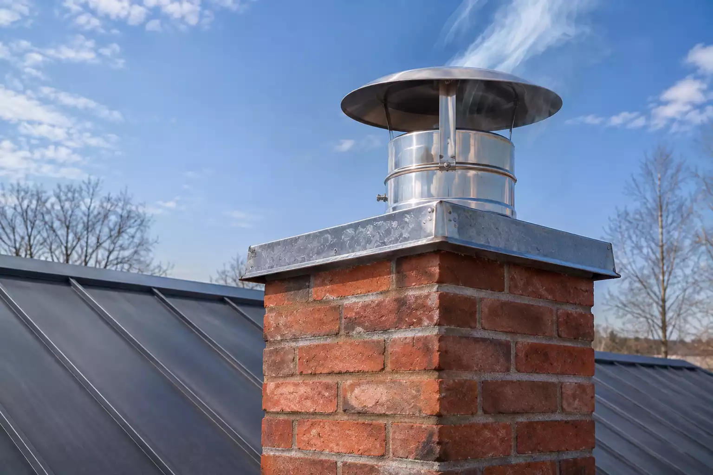

Испытания дымовых труб: проверка тяги и соответствия классу по давлению

Дымовая труба и газоход отводят продукты сгорания от газоиспользующего оборудования. Ошибки монтажа — негерметичные соединения, неверная трасса, несоответствие трубы проекту — могут привести к попаданию продуктов сгорания в помещение.
Что проверяем
- Наличие тяги — измеряем разрежение в дымовой трубе, дымоходе или газоходе.
- Соответствие классу по давлению — проверяем трубу при испытательном давлении, установленном для её класса, и сравниваем результат с проектной документацией.
Когда нужны испытания
- При приёмке новой дымовой трубы, дымохода или газохода после монтажа.
- После реконструкции или ремонта: замены участков ствола, гильзования, изменения трассы.
- При подключении к существующей трубе котла или другого газоиспользующего оборудования.
- При опрокидывании тяги, задымлении или запахе продуктов сгорания в помещении.
Как подготовить объект
- Подготовить проектную документацию с указанием класса дымовой трубы по давлению.
- Завершить монтаж трубы и всех соединений.
- Обеспечить доступ к ревизионным отверстиям и местам подключения оборудования.
- Обеспечить присутствие представителя заказчика, знающего объект.
Испытания выполняются по СП 4.03.03-2026 «Системы внутреннего газоснабжения зданий и сооружений. Контроль качества работ», АМИ.МН 0222-2025 и требованиям проектной документации.
По результатам оформляется протокол испытаний с выводом о наличии тяги и соответствии трубы классу по давлению.
Подробнее об услуге